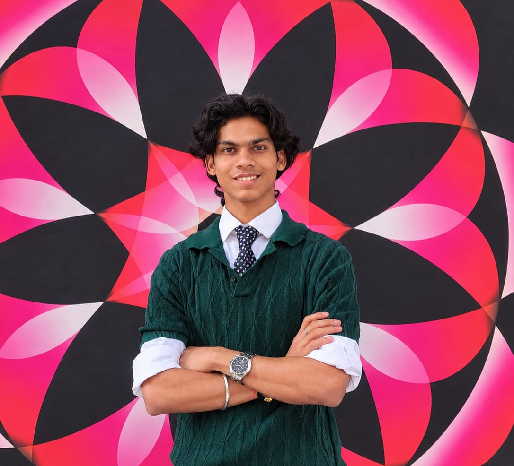

01 / Easy mode
Observe · Remember · Diagnose
Product
Autopsy.
Nine small clues. One hidden product problem. Can you remember the evidence and identify what is actually going wrong?
Product thinker. Builder. Curious about the decisions that turn real problems into useful products.

Step into two interactive product challenges. Remember the evidence, investigate the business, make trade-offs, and defend what you choose to build.
Nine small clues. One hidden product problem. Can you remember the evidence and identify what is actually going wrong?
One business challenge. Three questions. Ten initiatives. Rank the opportunities and decide what deserves to move forward.
These case studies show how I frame problems, choose a direction, set boundaries and decide what to learn next. I separate observed experience from assumptions, proposed strategy and verified outcomes.
RBOOK explores a scheduled cab-booking experience for people whose journeys are predictable enough to plan ahead. A passenger would enter a starting point, destination, preferred time and recurring days. The product hypothesis is that coordinating compatible demand before departure could make regular travel more predictable and potentially more affordable.
The idea came from a combination of personal observation, conversations and market/competitor exploration around recurring travel and cab costs. It raised a question: why do people with repeatable journeys have to approach every trip as a completely separate booking?
This is the origin of the problem hypothesis, not proof that all commuters experience the same issue.
These are candidate segments. Regular commuters are the recommended first segment to investigate because their patterns may repeat frequently.
For a five-day office commuter, the transport decision may recur on most working days. Airport and weekend trips are less frequent but may have stronger advance-planning needs. These are usage scenarios, not measured frequency findings.
Can a passenger schedule a journey in advance and discover a suitable travel option with compatible route, timing and availability—without adding unnecessary complexity to the booking process?
Coordinate predictable travel before departure, instead of treating every journey as an isolated on-demand request.
RBOOK's potential value has two sides: passengers may gain a more planned and cost-conscious option; mobility providers may gain better visibility into upcoming demand. Both sides need research and operational validation.
On-demand ride-hailing is designed around immediate requests. Public transport follows fixed routes and timetables. Informal carpooling depends on people coordinating themselves. RBOOK investigates a middle ground: passenger-defined schedules and route compatibility.
Existing cab booking, carpooling, public transport, subscriptions and employer transport may already solve parts of the problem. RBOOK is a promising hypothesis to test—not a proven superior solution. It only earns its place if research shows a meaningful gap and the matching economics work.
The next research step is to compare these options from the passenger's perspective, not assume they are inadequate.
These features add cost before answering the central question: will people use scheduled, compatible travel?
Interview regular commuters and transport providers. Map current alternatives, booking habits, price sensitivity and trust concerns.
Test the schedule-entry and matching journey with realistic sample routes. Observe comprehension, intent and points of friction.
Test route density, driver availability, cancellation rules, safety, unit economics and operational constraints before a pilot.
Proposed measures—not current results—include schedule-to-booking conversion, match availability, repeat booking rate, passenger cost versus a comparable alternative, cancellation rate, on-time pickup and driver utilisation.
RBOOK is an early-stage concept. It is not live, not publicly launched and has not been validated at scale. The next priority is customer discovery and a testable prototype, followed by research with drivers/operators and feasibility work on route matching.
Hireside is an AI-assisted interview preparation product shaped by my own interview-preparation experience. The goal is to help candidates practise in a more guided, role-aware and interactive way—not simply browse another list of generic interview questions.
The starting point was my own interview-preparation experience: finding relevant questions, practising answers, anticipating follow-ups and trying to understand what an interviewer might expect. Preparation can become fragmented across question lists, videos, notes and separate practice tools.
This personal experience led to a product hypothesis. It is not a claim that every candidate prepares in the same way.
The recommended initial focus is fresh graduates and early-career candidates, rather than trying to serve every profession and seniority level at launch.
The need can recur whenever a candidate applies for a role, receives an interview invitation or prepares for a new interview round. Candidates actively applying may practise repeatedly over a short period. We do not yet have usage-frequency data or a measured estimate of how often the target users experience this problem.
Can an AI-assisted mock interviewer make preparation more relevant and interactive by adapting questions to a candidate's role and experience—and by responding naturally to what the candidate actually says?
A useful mock interview should feel like a conversation, not a question generator taking turns with the candidate.
These describe the intended product experience. The latest build needs a feature-by-feature audit before every capability can be labelled working.
Friends or classmates tested the application directly. Their feedback exposed weaknesses in the interview conversation:
Question generation is only one part of an interview. The experience also depends on listening, turn-taking, response timing, context retention and follow-up quality. If the AI cuts off a long answer or fails to ask a relevant follow-up, the product stops feeling like an interviewer.
The first priority is to make the core interview loop useful and dependable.
Improve turn-taking, long-answer handling, interruption behaviour and natural pacing.
Use the candidate's previous answer to ask relevant probing questions instead of moving mechanically to the next prompt.
Run repeatable tasks with candidates, record observed friction with consent and compare feedback across iterations.
Proposed measures include successful completion of a mock interview, interruption/recovery incidents, candidate-reported conversational naturalness, relevant follow-up rate, response latency and willingness to practise again. These are future evaluation measures, not achieved results.
Earlier project discussions referenced a Node.js application, a server.js entry point and an optional Groq API integration with an interviewer fallback. The current architecture, exact provider/model configuration and fallback behaviour must be checked against the latest source code before being described as verified implementation details.
Hireside is in development and has been tried informally by more than 10 friends or classmates. The next priority is to improve and test the interview experience, especially friendly conversation, interruption handling, long-answer support and contextual follow-up questions. It is not being presented as publicly launched or as having proven interview-outcome improvements.
Claude was my primary AI tool. I also used ChatGPT and Gemini. I relied on AI across much of the workflow—from shaping ideas and requirements to prototyping, coding, debugging and exploring alternatives. I selected tools based on the task and the speed of iteration. Exact model names and versions still need verification against my actual usage history.
Explore user journeys, structure requirements, test interface ideas and understand technical trade-offs without waiting for a full engineering team.
During AI-assisted building, a recurring risk is that generated code or instructions can look plausible while missing the project context, misunderstanding a requirement or failing when tested. I will document a specific historical hallucination only when I can point to the actual example; I will not invent one.
My working fallback is to return to the requirement, inspect the actual files and configuration, verify the relevant documentation, test the smallest affected flow and simplify or replace the approach when needed. For AI-dependent product behaviour, a deterministic fallback should keep the core flow understandable when the model or API is unavailable.
I remain responsible for choosing the problem, defining scope, prioritising features, reviewing generated work, testing the experience and deciding what not to build. AI accelerates execution; it does not validate customer need or take accountability for product decisions.
Transparency: specific model-version mapping, documented hallucination incidents and project-specific fallback evidence will be added only after checking actual model history and source code.
This section will grow as I learn, test ideas and build. It is a transparent view of the capabilities I'm developing—not a list of achievements I haven't earned yet.
Customer problems, product strategy, discovery, prioritization and product delivery.
Turning incomplete information into clear assumptions, trade-offs and next steps.
Researching real problems, documenting decisions and learning through practical experiments.
Research questions, user needs, problem framing and assumptions.
Prioritization, impact-versus-effort thinking and clear rationale.
Communication, coordination, planning and learning from outcomes.
I'm interested in how products find the right problems, make deliberate trade-offs, and create meaningful outcomes for customers and businesses. This space is an experiment in showing product thinking through interaction—not just listing frameworks.
The simulations on this website are fictional learning experiences. They demonstrate reasoning and decision-making; they are not claims of professional outcomes or employment experience.
Explore my work or get in touch through the links below.
Contact handle: cj.sudhanshuchoubey
Explore my background, current projects and product thinking—or connect with me directly.
Choose one of the two product challenges. Complete it to unlock the case studies, product strategy, AI workflow and the rest of my portfolio.
The portfolio unlocks after you complete either challenge. You can replay both once inside.